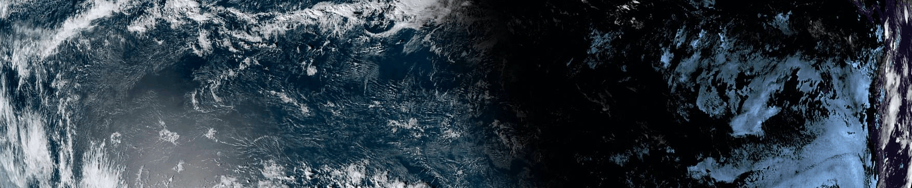
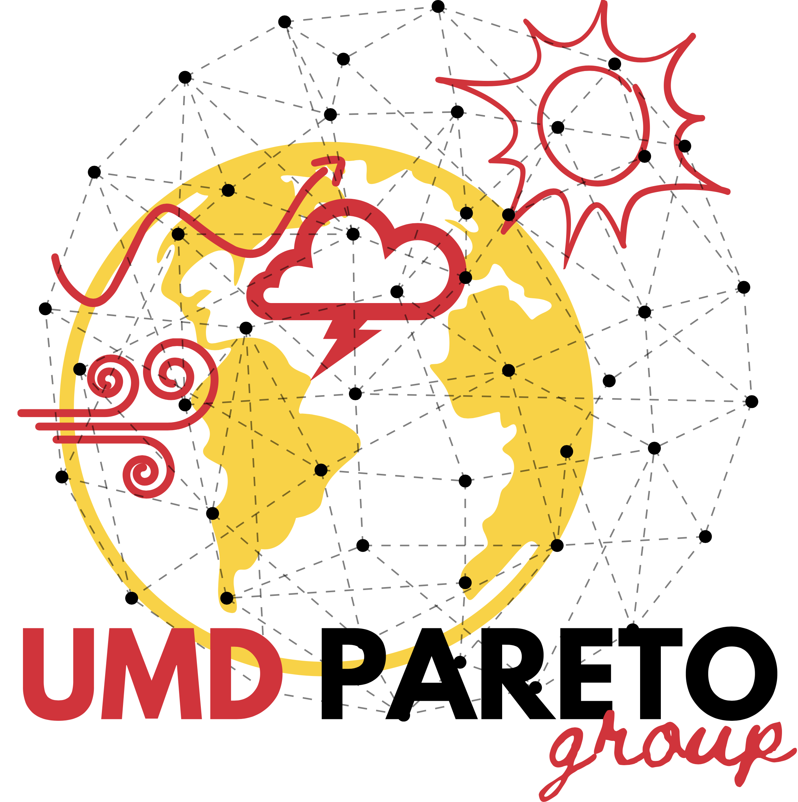
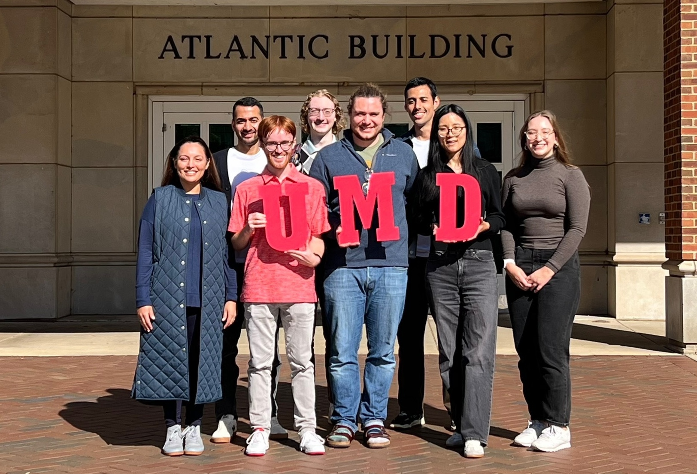

Welcome! We focus on Predictability and Applied Research for the Earth-system with Training and Optimization (PARETO). As such, we use machine learning (e.g., neural networks) and numerical modeling systems (e.g., CESM) to answer pressing questions and address challenges in modeling the Earth system. Examples of problems that we are tackling include:
Our research also strives to incorporate open-source software and data, accessible communication, and multi-discipline collaboration (particularly with computer science).
Our group name, PARETO, is inspired by the Pareto frontier, a fundamental concept in optimization theory. The concept was named after the Italian economist Vilfredo Pareto (1848-1923) and delineates trade-offs between competing objectives.

Fall 2025 group photo. Pictured from left to right: Assistant Professor Maria J. Molina, Sunny Sharma, Jon Starfeldt, Dean Calhoun, Kyle Hall, Jhayron S. Perez-Carrasquilla, Yamin Guo, and Emily Wisinski. Visiting Postdoctoral Fellow Manuel Titos not pictured. Learn more about our group [here].
If you are interested in joining our group as a graduate researcher, please note that all interested applicants must apply online to be considered.
Recent News
☁ [June] Kyle Hall was awarded the Green Fund Scholarship Award from AOSC. Congratulations, Kyle!
☁ [June] Jonathan Starfeldt was awarded the Green Fund Scholarship Award from AOSC. Congratulations, Jon!
☁ [June] Kyle Hall was selected to attend the Rossbypalooza Summer School at University of Chicago this summer.
☁ [June] Emily Wisinski and Kyle Hall were selected to attend the Physical Oceanography Training Cruise June 25-28, 2026, aboard the R/V Savannah, moored in Savannah, Georgia.
More news available [here].
Recent Publications
☁ Guo, Y., A. Hu, G. A. Meehl, M. J. Molina, H. Li, K. Bellomo, and N. Rosenbloom (2026). Migration of the Intertropical Convergence Zone Driven by Ocean Circulation Changes. Nature Communications. [Link]
☁ Furtado, J. C.‡, M. J. Molina‡, M. C. Arcodia‡, W. Anderson, T. Beucler, J. A. Callahan, L. M. Ciasto, V. A. Gensini, M. L. L’Heureux, K. Pegion, *J. S. Pérez-Carrasquilla, M. Sonnewald, K. Takahashi, B. Xiang, and B. G. Zimmerman (2026). Setting the Standard: Recommended Practices for Data Preprocessing in Data-Driven Climate Prediction. Bulletin of the American Meteorological Society. [Link]
☁ *Wichrowski, L., *J. S. Pérez-Carrasquilla, and M. J. Molina (2026). Weather Regime Diversity, Transitions, and Trends using Hexagonal Self-Organizing Maps. Journal of Geophysical Research: Atmospheres. [Link]
More publications available [here].
Any opinions, findings and conclusions or recommendations expressed herein do not necessarily reflect the views of the University of Maryland.